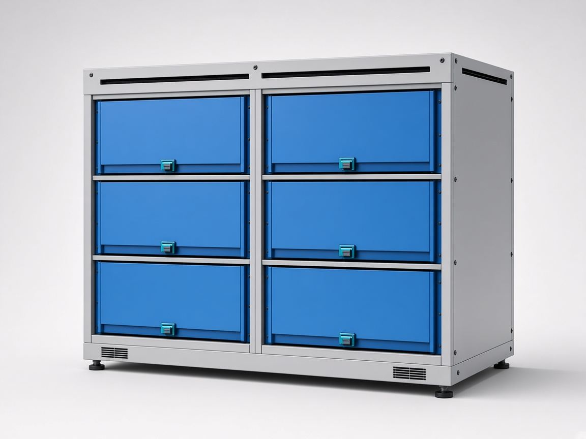
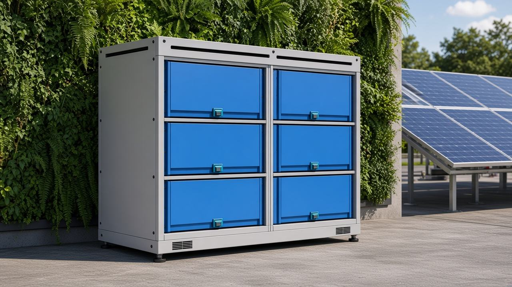

Солнечная энергетика · накопление
Аккумуляторы и системы накопления энергии из Китая
Yucore Industrial Supply подбирает аккумуляторные модули, стойки и шкафные системы накопления из Китая для гибридных солнечных станций, резерва и промышленных объектов в России. Запрос строится вокруг напряжения, емкости и совместимости с инвертором. Цена, срок и наличие подтверждаются только в письменном коммерческом предложении. До проверки позиция не считается доступной.
Это не шкаф автоматики и не частотный преобразователь. Накопитель хранит энергию. Если нужен только заряд от массива без шкафа батареи, откройте контроллеры заряда.

Применение
Шкаф накопления энергии рядом с солнечными панелями

Параметры важнее общего названия
Как описать накопитель
Емкость за заказчика не назначаем. Официальная авторизация брендов не заявляется без письменного подтверждения по конкретному заказу.
Модули и стойки
- Для гибридного инвертора с батарейным входом
- Напряжение, которое ждет инвертор
- Емкость и число модулей, если оно уже посчитано
- Фото шильдика существующей батареи, если это замена
Шкафные системы накопления
- Шкаф или более крупная система для объекта
- Емкость и мощность заряда и разряда
- Напряжение подключения к инвертору или щиту
- Ограничения по помещению, если они уже известны
Химия и замена
- Напишите химию, если она задана проектом
- Часто запрашивают литий-железо-фосфатные модули
- Для резерва встречаются свинцово-кислотные батареи
- Менять химию или напряжение без согласования нельзя
Перевозка
- Условия зависят от типа батареи и упаковки
- Маршрут согласуется вместе с городом доставки
- Срок не публикуется как общий для всех заказов
- Ограничения перевозки сообщаем в предложении
Как это ищут
Формулировки для запроса
FAQ
Вопросы по аккумуляторам и накопителям
Какие данные нужны для запроса аккумуляторов и накопителя?
Напряжение, емкость в кВт·ч или А·ч, ток заряда и разряда, химия если она известна, модель инвертора или параметры его батарейного входа, количество, фото и город доставки.
Можно ли включить батареи в один запрос с инвертором?
Да. Разнесите их по разным строкам: у инвертора свои параметры, у накопителя свои. Так проще проверить совместимость. Формат списка описан в руководстве по заявке.
Как согласуется доставка аккумуляторов в Россию?
По каждому заказу отдельно. Тип батареи и упаковка влияют на доступные варианты перевозки. Город доставки укажите сразу. Фиксированный срок на сайте не публикуется.
Есть ли на сайте складские артикулы аккумуляторов?
Нет. Публичного склада с фиксированными артикулами на сайте нет. Поиск идет по модели или параметрам запроса. Авторизация бренда не заявляется без письменного подтверждения по конкретному заказу.
Где подтверждаются цена, срок и наличие?
Yucore Industrial Supply — направление Guangzhou Xiaoyu Import & Export Co., Ltd в Гуанчжоу. По категории «аккумуляторы и системы накопления» цена, срок и наличие подтверждаются только в письменном коммерческом предложении. Заявку отправляют Summer на summer@yucore.ltd или в WhatsApp +86 150 1848 5957. До проверки позиция не считается доступной.
Есть шильдик батареи или расчет емкости?
Пришлите файл или фото. Если емкость еще не посчитана, напишите нагрузку и желаемое время резерва, и мы уточним, каких данных не хватает.
Рядом по теме